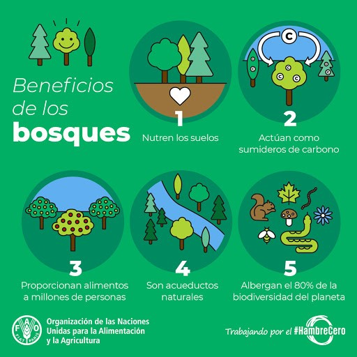
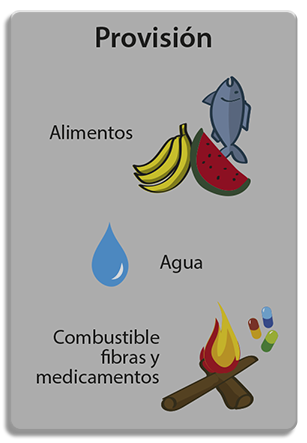
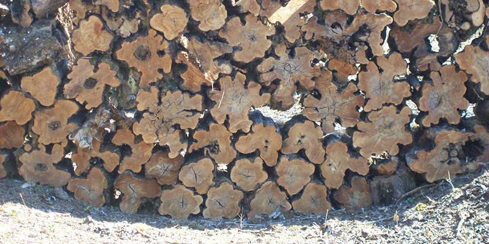
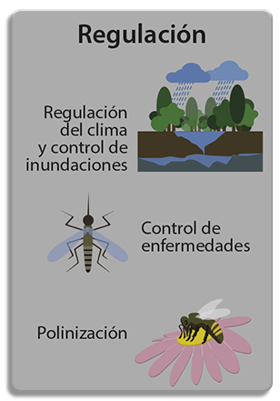
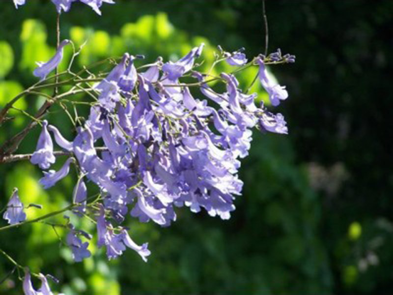
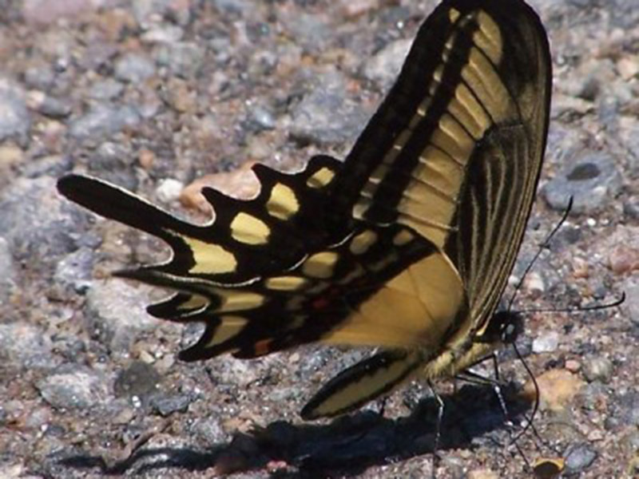
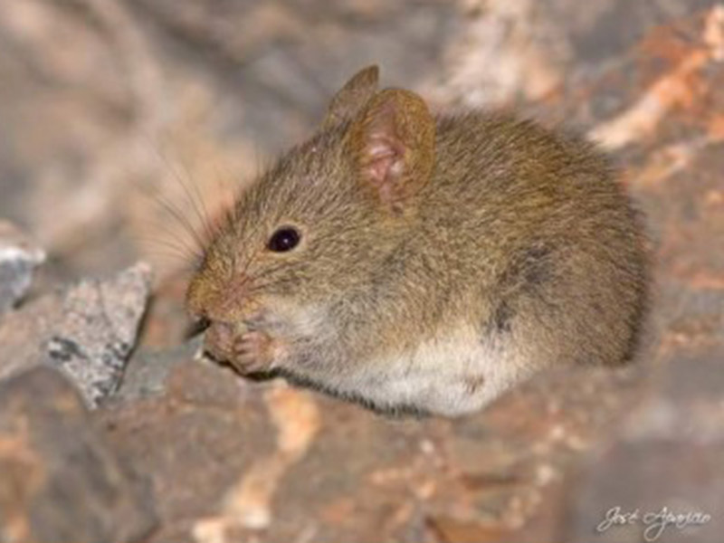
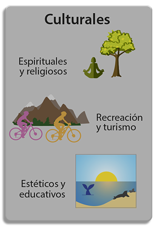

Gracias a los servicios ecosistémicos disponemos de alimentos, aire puro, agua, regulación natural de enfermedades y del clima.
Todo lo que la naturaleza provee al hombre ha sido útil a lo largo de su existencia ya sea para alimentarse, refugiarse o calefaccionarse. Los bienes y servicios del bosque fueron necesarios para la vida de las sociedades y, en función de ello, tienen un valor atribuido por las personas.
Los principales servicios ambientales que los bosques nativos brindan a la sociedad son: Regulación hídrica; Conservación de la biodiversidad; Conservación del suelo y de calidad del agua; Fijación de emisiones de gases con efecto invernadero; Contribución a la diversificación y belleza del paisaje y Defensa de la identidad cultural.
A los servicios ecosistémicos los podemos agrupar en:
El Congreso de la Nación Argentina sancionó en 2007 la Ley N° 26.331 de “Presupuestos Mínimos de Protección Ambiental de los Bosques Nativos”, que se reglamentó́ y comenzó a implementarse en 2009.
Se llama bosques nativos a los ecosistemas forestales naturales compuestos predominantemente por especies arbóreas nativas maduras, con diversas especies de flora y fauna asociadas, en conjunto con el medio que las rodea —suelo, subsuelo, atmósfera, clima, recursos hídricos—, conformando una trama interdependiente con características propias y múltiples funciones, que en su estado natural le otorgan al sistema una condición de equilibrio dinámico y que brinda diversos servicios ambientales a la sociedad, además de los diversos recursos naturales con posibilidad de utilización económica.
Se encuentran comprendidos en la definición tanto los bosques nativos de origen primario, donde no intervino el hombre, como aquellos de origen secundario formados luego de un desmonte, así como aquellos resultantes de una recomposición o restauración voluntarias.
Quedan exceptuados de la aplicación de la ley todos aquellos aprovechamientos realizados en superficies menores a DIEZ (10) hectáreas que sean propiedad de comunidades indígenas o de pequeños productores.
Te recomendamos leer la Ley n° 26.331 – Protección ambiental de los bosques nativos
"Los servicios ecosistémicos combinan la preservación del medio natural a la vez que se hace un uso y desarrollo sostenibles."

Los beneficios de los bosques - infografía FAO
Los servicios ecosistémicos son aquellos beneficios que un ecosistema aporta a la sociedad y que mejoran la salud, la economía y la calidad de vida de las personas. Los servicios ambientales o ecosistémicos son aquellos servicios que resultan del propio funcionamiento de los ecosistemas.
Son ejemplos de ello la producción de agua limpia, la formación de suelo, la regulación del clima por parte de los bosques, la polinización, etc. A pesar de que muchos de ellos nos puedan pasar por alto, es imprescindible conservar los servicios ecosistémicos porque sustentan nuestra salud, nuestra economía y nuestra calidad de vida. Cuando no somos capaces de conservarlos, su degradación conduce a perjuicios significativos en el bienestar humano.
Por ejemplo, una función clave en los ecosistemas es la acumulación de biomasa vegetal gracias a la fotosíntesis de las plantas. El servicio ecosistémico que se deriva, mirado siempre desde una óptica humana, sería la captación de CO2 atmosférico, que pasa a formar parte de las estructuras leñosas de las plantas, y disminuye el dióxido de carbono atmosférico, uno de los principales gases de efecto invernadero.
Así pues, los servicios ecosistémicos son cada vez más el centro de las políticas nacionales y europeas. Se utilizan como indicadores de la calidad de nuestra interacción con el entorno.
Servicios de Provisión

Son aquellos referidos a la cantidad de bienes o materias primas que un ecosistema ofrece.
Por ejemplo, podemos mencionar: Producción de Alimentos, madera y diversos productos ambientales.
Población

Provisión de madera - Foto: Mauricio Mattenet
Servicios de regulación
Son aquellos que derivan de las funciones clave de los ecosistemas, que ayudan a reducir ciertos impactos locales y globales. Por ejemplo, podemos mencionar: Captura de carbono, equilibra el clima, evita la erosión de los suelos, conserva la biodiversidad del lugar y ayuda a EVITAR DESASTRES NATURALES.
Biodiversidad

Flor de Jacarandá (Jacaranda mimosifolia) foto: L. J. Novara - SIB

Mariposa (Heraclides lamarchei) PN Campo de los Alisos, foto: J. Gabriel Santillán

Ratón andino(Abrothrix andinus) foto: José Aparicio - SIB
Los árboles y los bosques ayudan a mitigar estos cambios al absorber el bióxido de carbono de la atmósfera y convertirlo, a través de la fotosíntesis, en carbono que "almacenan" en forma de madera y vegetación. Este proceso se denomina "fijación del carbono".
Servicios culturales

Son aquellos que están relacionados con el tiempo libre, el ocio o aspectos más generales de la cultura.
Es el hogar de muchos pueblos originarios, como también de muchas plantas y animales.
Población
Fotos: Dalma Raymundi, Miguel Sarmiento